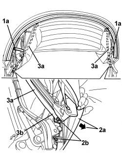
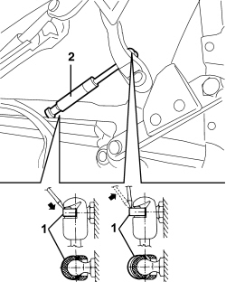
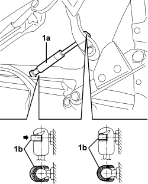
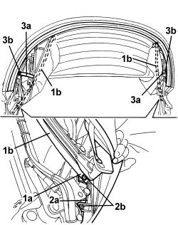

7030H23 HOOD TELESCOPIC STRUT (ONE), LEFT OR RIGHT - R.R
- Path
- Procedures > 70 FITTINGS > 7030 SUN ROOF/GLASS PANEL > 7030H AUTOMATICALLY OPERATED HOOD > 7030H23 HOOD TELESCOPIC STRUT (ONE), LEFT OR RIGHT - R.R
- Kind
- repair procedure (removal / refitting; the operation number is the code)
- Applies to
- engines: 2.2 JTS, 3.2 JTS; all production periods
- Interactive page
- https://sloeber94.github.io/elrnDB-aBrrSpdr/en/#/946003668
Applies to: engines: 2.2 JTS, 3.2 JTS; all production periods
 Removing
Removing
 Refitting
Refitting- Prepare the hood for the procedure.
Op. 0010T79 HOOD HYDRAULIC SYSTEM - DISCHARGE AND RESTORE PRESSURE
- Raise the rear part of the hood using the electric controls.
1. Working on the side of the telescopic strut to be removed, drill out rivet (1a) (keep the parts of the rivet).
2. Move interior lining edge (2a) and undo bolts (2b).
3. Disconnect side link (3a) from terminal fastening (3b).

Applies to: engines: 2.2 JTS, 3.2 JTS; all production periods
- Completely lower the rear part of the hood using the electric controls.
1. Using a screwdriver, prise up the retaining clips from both ends of the telescopic strut (without removing them).
2. Remove the telescopic strut by disengaging it from the ball joints.

Applies to: engines: 2.2 JTS, 3.2 JTS; all production periods
Refitting
Removing- Check that the telescopic strut is not damaged.
1. With the rear part of the hood completely lowered, engage telescopic strut (1a) onto the ball joints and fit retaining clips (1b).

Applies to: engines: 2.2 JTS, 3.2 JTS; all production periods
1. Place side link (1b) terminal fastening (1a) in position.
2. Position side bracket (2a) and screw in bolts (2b).
3. Position side link (3a) and secure it with rivet (3b).

Applies to: engines: 2.2 JTS, 3.2 JTS; all production periods
- If discharged, restore the hood hydraulic system pressure.
Op. 7030H03 HOOD MANUAL OPENING FOLLOWING DEACTIVATION OF HYDRAULIC SYSTEM - CARRY OUT PROCEDURE
- Check that the hood is working correctly.